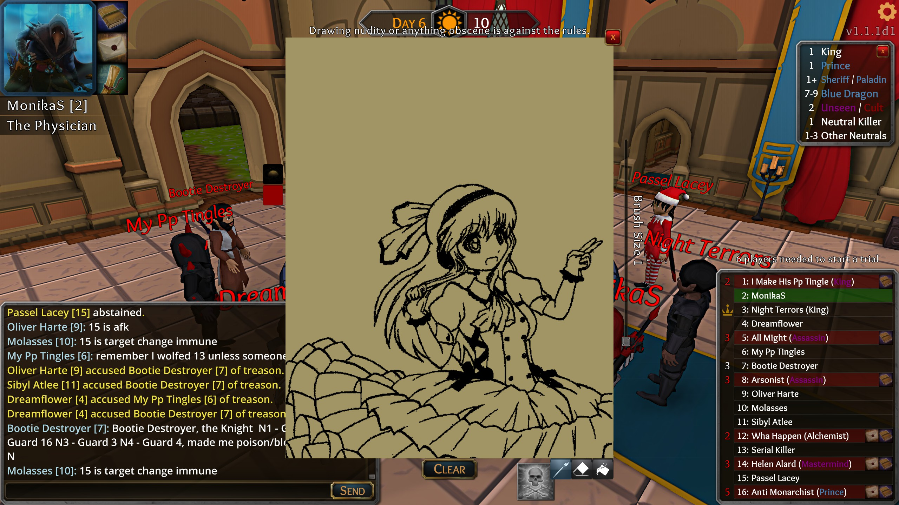

Throne Of Lies Deathnote Tool - By: Dewblackio2 (aka Krohdo)
This program has been approved for public release by i42-Xblade as of 4/13/2018:
“The .au3 file is officially approved for use in-game.
While only the .au3 file is approved, use the executable at your own risk.
(the .exe file exists so you don’t have to download AutoIt)” --i42-Xblade
Terms Of Use
Using this software to draw any form of obscurities or NSFW content on your deathnote, will result in a flag against your Throne of Lies account and may result in a permanent suspension. By using this application, you agree to these terms.
Updated to Version 1.3
- GUI Overhaul (thanks to Shrike <3)
- More Config Options Saved
- Grey, Orange, Teal Colors Added
- Extreme optimizations to image processing speed
- Option to now select background color, with tolerance to allow for images with white backgrounds to ignore background, but still contain white in the image itself
- Donation button added for my buddy shrike, since he helped IMMENSELY with improving this project <3
- Some minor optimizations to prevent “rouge lines” as much as possible, varries based on Computer performance
- GUI now has minor AI logic to remeber positions it was last in and making the usage as friendly as possible
Updated to Version 1.2
- Aspect ratios for images are now locked to prevent distorting images.
- Input pattern, speed, and threshold values are now saved in a config file.
- Tool now has an update check feature.
- Draw image size, now displays the bitmap of the image rather than a rectangle.



 (if for some reason they dont, contact me via discord: Dewblackio2#6950)
(if for some reason they dont, contact me via discord: Dewblackio2#6950)